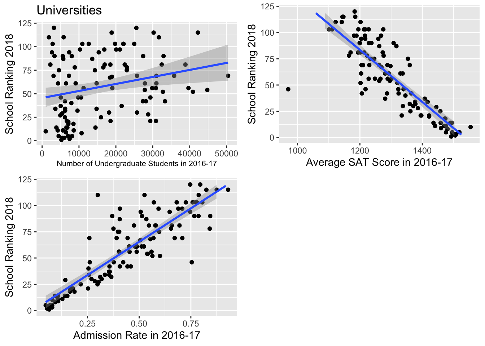
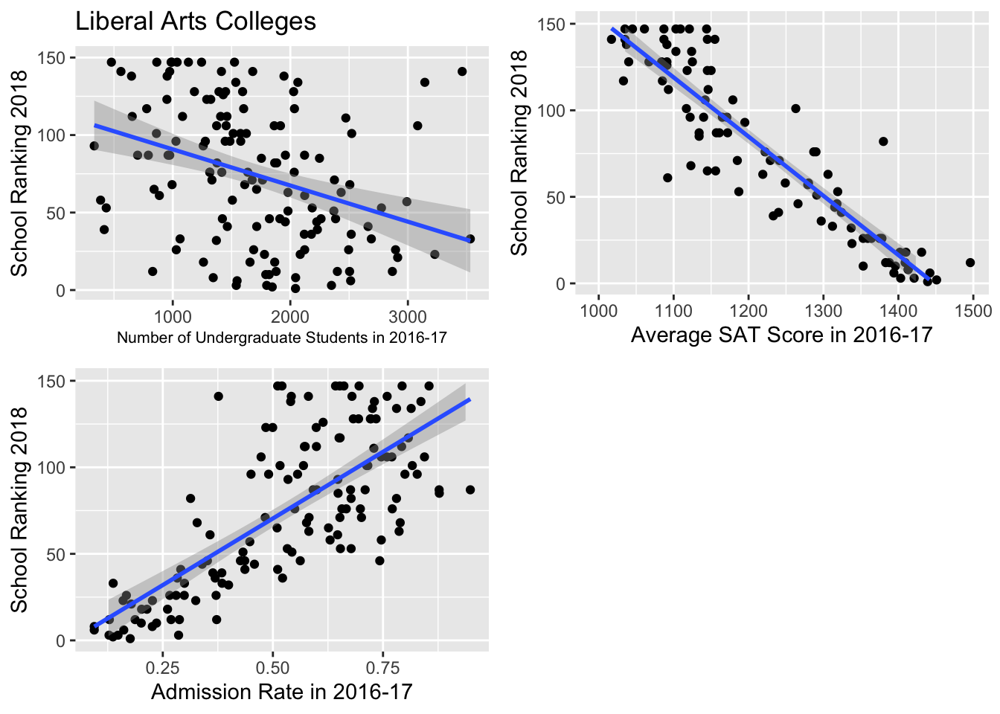

Chapter 9 Part 3: Becoming a proud Bayesian
9.1 University Model
After deciding on the variables of interest (size of undergraduate student body, average SAT score, admission rate, and location), we took a step-by-step approach to create the model. In addition to determining the variables we needed, we also realized that we had to change our model type. After repeatedly getting negative values from our Normal model, we decided on a Poisson model. This would ensure positive outputs and we were hopeful that it would fit our data better.
9.1.1 Get some intuition
For some intuition, we built some bi-variate visualizations that helped us understand the individual trends between ranking and our quantitative variables:

After looking at the following plots and fitting them with generalized linear models (since Poisson models are on the log-scale), we saw generally linear relationships between rank and SAT score and admission rate. There was a pretty weak linear relationship between ranking and number of undergrads. However, having seen these plots and fit linear models to them, we were able to still move forward with our generalized linear model.
9.1.2 Some additional intuition
For more intuition, we start with more vague priors and slightly adjust the priors based on the summary table. It’s important to note that the priors cannot be set too close to the means of the summary table in case of overfitting.
9.1.3 Building the model
Our final university model predicts
\[Y_i = \text{the predicted 2018 ranking of a university}\]
by
\[\begin{align} X_{1,i} & = \text{the number of undergraduate students in university i} \\ Z_i & = \text{location of university i (City, Suburb, Town)} \\ X_{3,i} & = \text{student mean SAT score of Year 2016-17} \\ X_{3,i} & = \text{admissions rate during Year 2016-17} \end{align}\]
Specifically:
\[\begin{align} Y_i & \sim Pois(\lambda_i) \\ log(\lambda_i) & = \beta_0 + \beta_1X_{1,i} + \beta_{2,1}Z_{1,i} + \beta_{2,2}Z_{2,i} + \beta_{2,3}Z_{3,i} + \beta_3X_{3,i} + \beta_4X_{4,i} \\ \beta_0 & \sim N(8,1) \\ \beta_1 & \sim N(0,0.0001^{-1}) \\ \beta_{2,1} & = 0 \\ \beta_{2,2} & \sim N(0,100^{-1}) \\ \beta_{2,3} & \sim N(0,100^{-1}) \\ \beta_{3} & \sim N(0,0.1^{-1}) \\ \beta_{4} & \sim N(0,100^{-1}) \end{align}\]
where \(Z_{1,i}\) indicates if a liberal arts college is in the city (reference level); \(Z_{2,i}\) indicates if a college is in the suburb setting; \(Z_{3,i}\) indicates if a college is in the town setting.
university_model_3 <- "model{
# Data: observations
for(i in 1:length(y)) {
y[i] ~ dpois(lambda[i])
log(lambda[i]) = beta0 + beta1*x1[i] + beta2[z[i]] + beta3*x3[i] + beta4*x4[i]
}
# Data: subjects
beta0 ~ dnorm(8, 1)
beta1 ~ dnorm(0, 10000)
beta2[1] <- 0
beta2[2] ~ dnorm(0, 0.01)
beta2[3] ~ dnorm(0, 0.01)
beta3 ~ dnorm(0, 10)
beta4 ~ dnorm(0, 0.01)
}"
# COMPILE
y <- as.numeric(fullUniversity$Y2018)
model_data9 <- data.frame(y, x1 = fullUniversity$UGDS_1617, z = as.numeric(fullUniversity$LOCALE_collapse), x3 = fullUniversity$SAT_AVG_1617, x4 = fullUniversity$ADM_RATE_1617)
model_data9 <- na.omit(model_data9)
university_jags_3 <- jags.model(textConnection(university_model_3),
data = list(y = model_data9$y, x1 = model_data9$x1, z = factor(model_data9$z), x3 = model_data9$x3, x4 = model_data9$x4),
inits=list(.RNG.name = "base::Wichmann-Hill", .RNG.seed = 454))## Compiling model graph
## Resolving undeclared variables
## Allocating nodes
## Graph information:
## Observed stochastic nodes: 114
## Unobserved stochastic nodes: 6
## Total graph size: 1137
##
## Initializing model9.1.4 Model summary
##
## Iterations = 1001:11000
## Thinning interval = 1
## Number of chains = 1
## Sample size per chain = 10000
##
## 1. Empirical mean and standard deviation for each variable,
## plus standard error of the mean:
##
## Mean SD Naive SE Time-series SE
## beta0 6.693e+00 3.148e-01 3.148e-03 1.064e-01
## beta1 -4.418e-06 1.154e-06 1.154e-08 3.881e-08
## beta2[1] 0.000e+00 0.000e+00 0.000e+00 0.000e+00
## beta2[2] 1.529e-02 3.080e-02 3.080e-04 6.158e-04
## beta2[3] 1.464e-01 5.940e-02 5.940e-04 1.345e-03
## beta3 -2.539e-03 2.136e-04 2.136e-06 6.886e-05
## beta4 1.374e+00 1.055e-01 1.055e-03 1.990e-02
##
## 2. Quantiles for each variable:
##
## 2.5% 25% 50% 75% 97.5%
## beta0 6.1899756 6.474e+00 6.6367448 6.853e+00 7.416e+00
## beta1 -0.0000067 -5.213e-06 -0.0000044 -3.621e-06 -2.184e-06
## beta2[1] 0.0000000 0.000e+00 0.0000000 0.000e+00 0.000e+00
## beta2[2] -0.0454972 -5.617e-03 0.0151296 3.629e-02 7.586e-02
## beta2[3] 0.0265393 1.076e-01 0.1474028 1.870e-01 2.622e-01
## beta3 -0.0030334 -2.650e-03 -0.0025023 -2.393e-03 -2.194e-03
## beta4 1.1282817 1.311e+00 1.3846333 1.447e+00 1.551e+009.1.5 Posterior inference
For an unknown university located in the city (\(\text{beta2} = 0\), since city is the reference level) with \(10000\) undergraduates, student mean SAT score of \(1400\) and an admission rate of \(25\%\) (e.g. Gvictor University), we could predict its ranking from our rjags simulation.
university_chains_3 <- university_chains_3 %>%
mutate(ranking_new = rpois(10000, lambda = exp(beta0 + beta1 * 10000 + beta3 * 1400 + beta4 * 0.25)))
university_chains_3 %>%
summarize(quantile(ranking_new,0.025),quantile(ranking_new,0.975))## quantile(ranking_new, 0.025) quantile(ranking_new, 0.975)
## 1 20 43The interval is more reflective of the intuitive estimate of Gvictor University’s ranking. We get a reasonable range of values \((1, 120)\), and we would predict that a school with a moderately selective admissions rate (\(25\%\)) and an SAT score average of \(1400\), would fall into a “Tier 2” range (approximately between 25 and 50).
9.2 Liberal Arts Colleges
9.2.1 Get some intuition
For some intuition, we again built some bi-variate visualizations that helped us understand the individual trends between ranking and our quantitative variables:

After looking at the following plots and fitting them with generalized linear models, we saw the strongest linear relationship between average SAT score and ranking. There was also a fairly strong linear relationship between admission rate and ranking. The relationship between ranking and number of undergrads remains quite weak for liberal arts colleges, but is still existent. So, having seen these plots and fit linear models to them, we were confident in moving forward.
9.2.2 Building the model
Our final liberal arts college model predicts
\[Y_i = \text{the predicted 2018 ranking of a liberal arts college}\]
by
\[\begin{align} X_{1,i} & = \text{the number of undergraduate students in liberal arts college i} \\ Z_i & = \text{location of liberal arts college i (City, Rural, Suburb, Town)} \\ X_{3,i} & = \text{student mean SAT score of Year 2016-17} \\ X_{3,i} & = \text{admissions rate during Year 2016-17} \end{align}\] Specifically: \[\begin{align} Y_i & \sim Pois(\lambda_i) \\ log(\lambda_i) & = \beta_0 + \beta_1X_{1,i} + \beta_{2,1}Z_{1,i} + \beta_{2,2}Z_{2,i} + \beta_{2,3}Z_{3,i} + \beta_{2,4}Z_{4,i} + \beta_3X_{3,i} + \beta_4X_{4,i} \\ \beta_0 & \sim N(0,0.0001) \\ \beta_1 & \sim N(0,0.0001^{-1}) \\ \beta_{2,1} &= 0 \\ \beta_{2,2} & \sim N(0,25^{-1}) \\ \beta_{2,3} & \sim N(-10,25^{-1}) \\ \beta_{2,4} & \sim N(-15,100^{-1}) \\ \beta_{3} & \sim N(-0.3,0.01^{-1}) \\ \beta_{4} & \sim N(36,0.1^{-1}) \end{align}\]
where \(Z_{1,i}\) indicates if a liberal arts college is in the city (reference level); \(Z_{2,i}\) indicates if a college is in the rural setting; \(Z_{3,i}\) indicates if a college is in the suburb setting; \(Z_{4,i}\) indicates if a college is in the town setting.
liberal_model_3 <- "model{
# Data: observations
for(i in 1:length(y)) {
y[i] ~ dpois(lambda[i])
log(lambda[i]) = beta0 + beta1*x1[i] + beta2[z[i]] + beta3*x3[i] + beta4*x4[i]
}
# Data: subjects
beta0 ~ dnorm(0, 0.0001)
beta1 ~ dnorm(0, 10000)
beta2[1] <- 0
beta2[2] ~ dnorm(0, 0.04)
beta2[3] ~ dnorm(-10, 0.04)
beta2[4] ~ dnorm(-15, 0.01)
beta3 ~ dnorm(-0.3, 100)
beta4 ~ dnorm(36, 10)
}"# COMPILE
y <- as.numeric(full_LiberalArts$Y2018)
model_data8 <- data.frame(y, x1 = as.numeric(full_LiberalArts$UGDS_1617), z = as.numeric(full_LiberalArts$LOCALE_collapse_lac1), x3 = as.numeric(full_LiberalArts$SAT_AVG_1617), x4 = as.numeric(full_LiberalArts$ADM_RATE_1617))
model_data8 <- na.omit(model_data8)
liberal_jags_3 <- jags.model(textConnection(liberal_model_3),
data = list(y = model_data8$y, x1 = model_data8$x1, z = factor(model_data8$z), x3 = model_data8$x3, x4 = model_data8$x4),
inits=list(.RNG.name = "base::Wichmann-Hill", .RNG.seed = 454))## Compiling model graph
## Resolving undeclared variables
## Allocating nodes
## Graph information:
## Observed stochastic nodes: 101
## Unobserved stochastic nodes: 7
## Total graph size: 1014
##
## Initializing model9.2.3 Model summary
##
## Iterations = 1001:11000
## Thinning interval = 1
## Number of chains = 1
## Sample size per chain = 10000
##
## 1. Empirical mean and standard deviation for each variable,
## plus standard error of the mean:
##
## Mean SD Naive SE Time-series SE
## beta0 5.7575868 3.6590045 3.659e-02 9.521e-01
## beta1 -0.0001047 0.0001043 1.043e-06 2.494e-05
## beta2[1] 0.0000000 0.0000000 0.000e+00 0.000e+00
## beta2[2] -0.1862067 0.1544641 1.545e-03 3.231e-02
## beta2[3] -0.1221312 0.0503896 5.039e-04 6.979e-03
## beta2[4] -0.5671952 0.2174377 2.174e-03 4.696e-02
## beta3 -0.0024861 0.0028859 2.886e-05 7.252e-04
## beta4 2.9260686 1.0288947 1.029e-02 2.916e-01
##
## 2. Quantiles for each variable:
##
## 2.5% 25% 50% 75% 97.5%
## beta0 4.5244176 4.7629993 4.8721236 5.0651715 18.1141821
## beta1 -0.0001654 -0.0001408 -0.0001265 -0.0001113 0.0002968
## beta2[1] 0.0000000 0.0000000 0.0000000 0.0000000 0.0000000
## beta2[2] -0.2737200 -0.2348096 -0.2141429 -0.1912261 0.2485554
## beta2[3] -0.1984605 -0.1453506 -0.1246138 -0.1044559 -0.0508085
## beta2[4] -0.7104135 -0.6439770 -0.6077693 -0.5682324 0.1487860
## beta3 -0.0119698 -0.0019412 -0.0018121 -0.0017256 -0.0015404
## beta4 -0.9364295 3.1050759 3.1747504 3.2368810 3.35371069.2.4 Posterior inference
For an unknown liberal arts college in a city setting (\(\text{beta}2 = 0\) given city is the reference level) with \(2000\) undergraduates, student mean SAT score of \(1400\) and an admission rate of \(25\%\) (e.g. Hvictor College), we could predict its ranking from our rjags simulation.
liberal_chains_3 <- liberal_chains_3 %>%
mutate(ranking_new = rpois(10000, exp(beta0 + beta1 * 2000 + beta3 * 1400 + beta4 * 0.25)))
liberal_chains_3 %>%
summarize(quantile(ranking_new,0.025),quantile(ranking_new,0.975))## quantile(ranking_new, 0.025) quantile(ranking_new, 0.975)
## 1 5 26This is totally reasonable. As mentioned earlier, liberal arts colleges tend to take a more holistic approach to their admissions processes and often have a smaller pool of applicants that is pretty self-selecting. Liberal arts colleges generally put less weight on standardized testing. As such, we can expect that such a school might have a pretty broad range of rankings it could receive. The interval reflects the intuitive estimate of Hvictor College’s ranking.
9.3 Comparison & Discussion
Compared to the last attempts, our final model gives reasonable predictions, which is a lot of progress! However, the \(95\%\) credible interval doesn’t provide as accurate an interval as desired.
By creating different imaginary schools, we are able to summarize the most important factors for universities and colleges respectively. We find that universities value SAT score as a more decisive indicator of both students’ admission and their own ranking. We also supported our intuition that liberal arts college tend distribute their weight among many factors when determining admission.